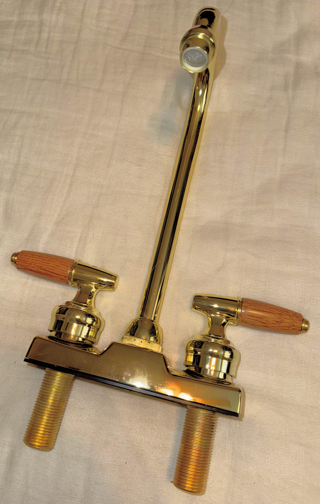

One of the things that I noticed when looking at the older hardware on boats from the 80s and 90s is that the general plumbing hardware that one touches, such as the faucets and valve controls were very well built, heavy, tactile and pleasing. This is still the case with some relatively high end hardware these days but was much more common in the past. Heavy Brass was often cast and then machined, often with a small amount of lead to make the machineing easier much to the decline of our health. However the beauty and quality of these fittings was unmatched by similar priced fittings in a modern context.
This is an image of the selected delta faucet.